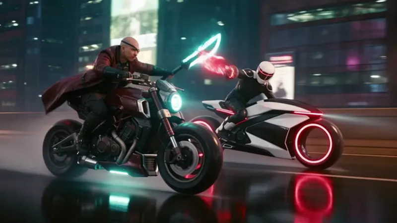
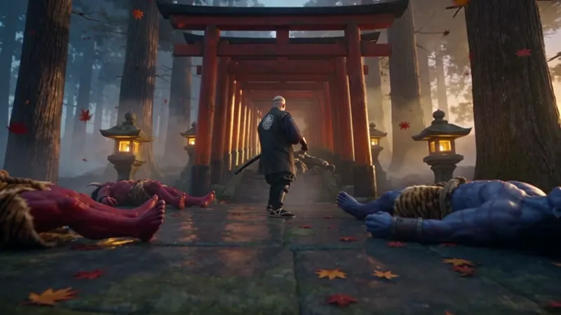
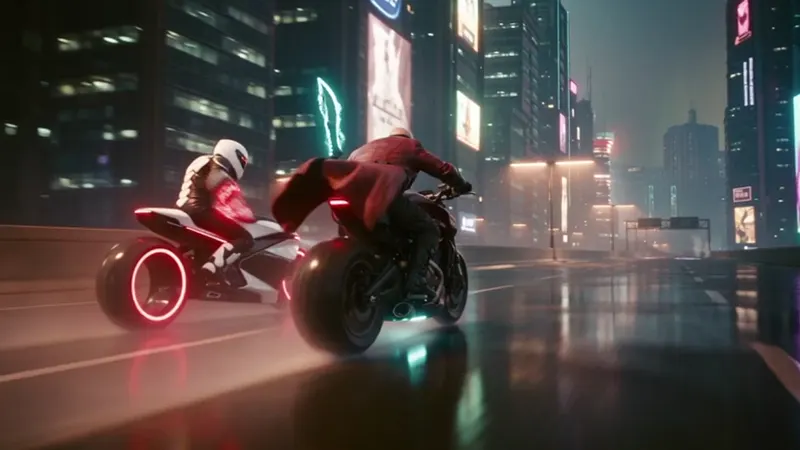

AI Film Studio
The Courier is the studio’s latest short. Watch it, fly through its frames, then see how it was made.
The Courier
A 101-second action short. Turn the sound on.
Inside the frame
Stills from The Courier, made with frontier AI video models. Scroll to fly through the cut.



How a film gets made
Generative tools are fast, but a film still needs direction. This is the order I work in.